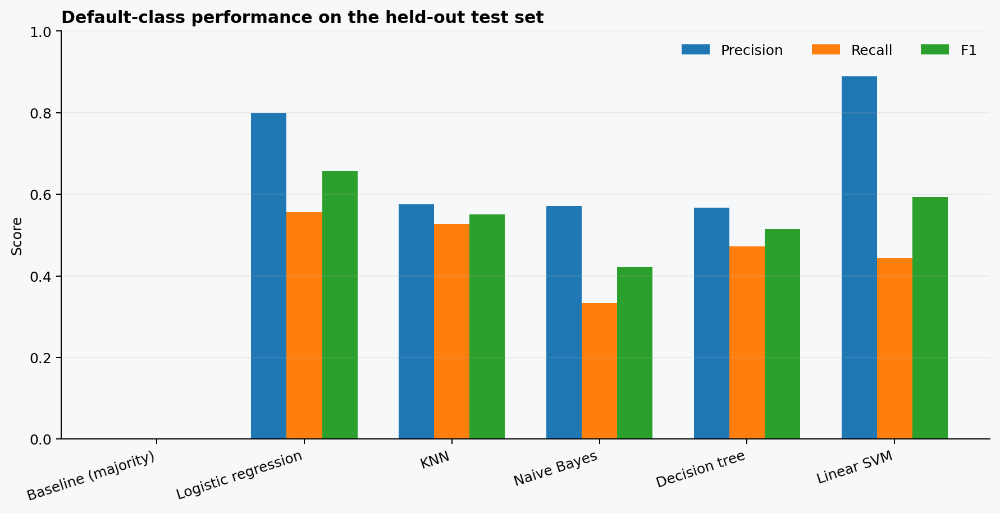
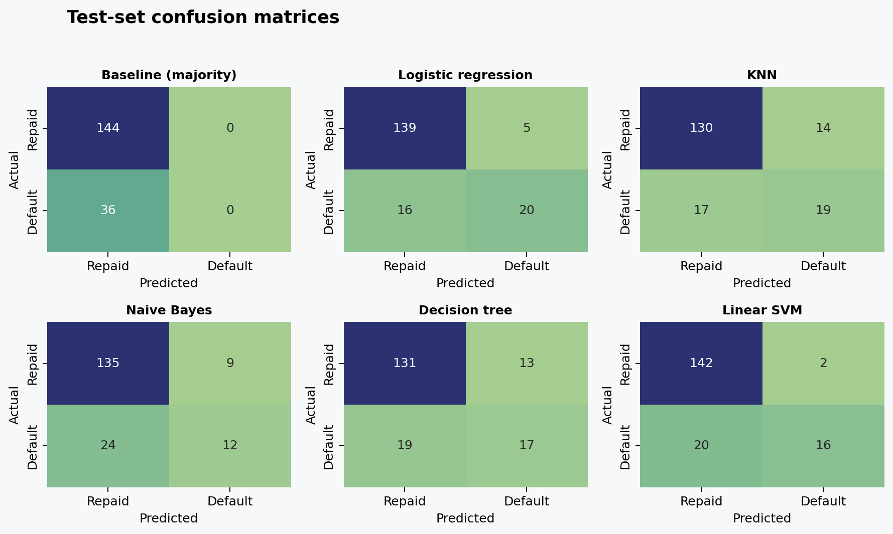
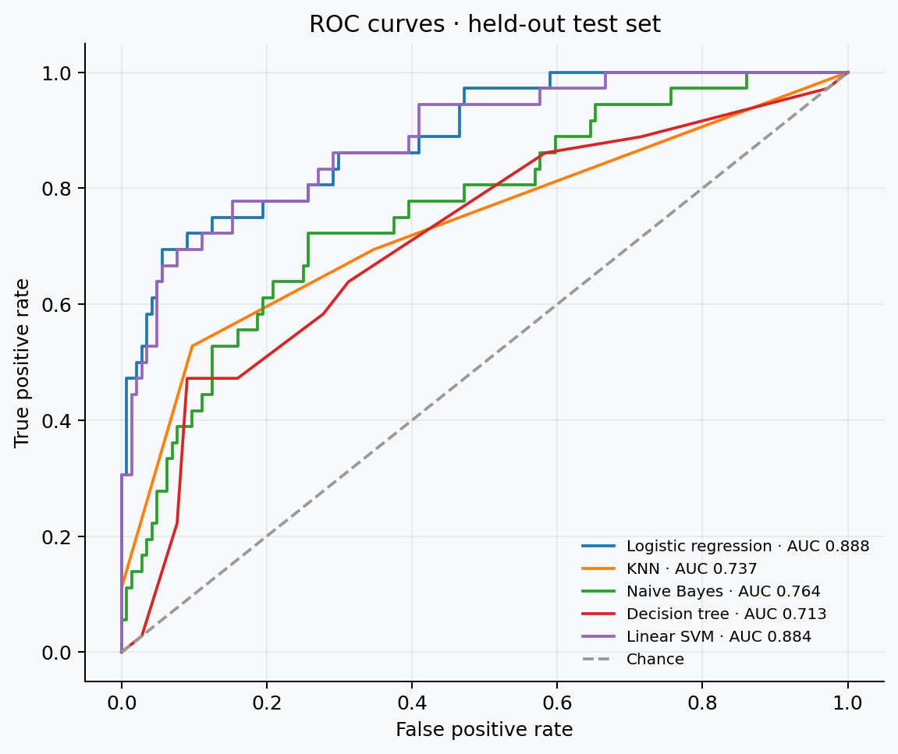

FINDING 01
Logistic Regression led overall
It delivered 0.888 ROC-AUC, 0.656 F1 and 0.556 recall. On the test set it caught 20 of 36 defaults, with 5 false positives.

The strongest result is not just a score: it is how model choice and classification thresholds change the balance between catching defaults and raising false alarms.
It delivered 0.888 ROC-AUC, 0.656 F1 and 0.556 recall. On the test set it caught 20 of 36 defaults, with 5 false positives.
At 0.30, recall rose to 0.722 while precision fell to 0.591. False positives increased from 5 to 18. The lower threshold is illustrative, not an optimised policy.
Validation recall increased from 0.207 on unscaled inputs to 0.414 on scaled inputs, showing the impact of feature units on distance-based learning.
The simulated default rate was 31.3% for non-members versus 9.0% for members. Root information gain was 0.0581; this is association within the simulation, not causation.
All models were evaluated on the same stratified test partition. Precision, recall and F1 refer to the positive class: default.
| Model | Accuracy | Precision | Recall | Specificity | F1 | ROC-AUC |
|---|---|---|---|---|---|---|
| Logistic Regression | 0.883 | 0.800 | 0.556 | 0.965 | 0.656 | 0.888 |
| Linear SVM | 0.878 | 0.889 | 0.444 | 0.986 | 0.593 | 0.884 |
| KNN | 0.828 | 0.576 | 0.528 | 0.903 | 0.551 | 0.737 |
| Decision Tree | 0.822 | 0.567 | 0.472 | 0.910 | 0.515 | 0.713 |
| Naive Bayes | 0.817 | 0.571 | 0.333 | 0.938 | 0.421 | 0.764 |
| Majority baseline | 0.800 | 0.000 | 0.000 | 1.000 | 0.000 | 0.500 |
Precision, recall and F1 expose performance hidden by accuracy.

Counts of true/false positives and negatives on the held-out set.

Area under the ROC curve is calculated from predicted probabilities or SVM decision scores.

Move the slider to compare the two evaluated operating points from the Logistic Regression test-set illustration.
Illustrative values only: the threshold must be selected using validation data and a defined error-cost framework.
The experiment separates training, validation and test responsibilities. Imputation and scaling are learned from the fit partition only, then applied to held-out data.
Fixed synthetic data generation, deterministic stratified split, checked-in sample and one-command model reproduction.
Repeated cross-validation, temporal/external validation, probability calibration, subgroup fairness assessment and human-reviewed pilot evaluation on governed real data.